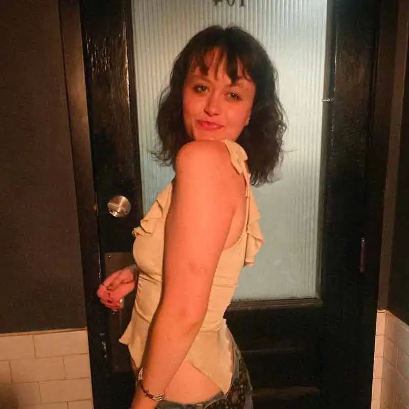
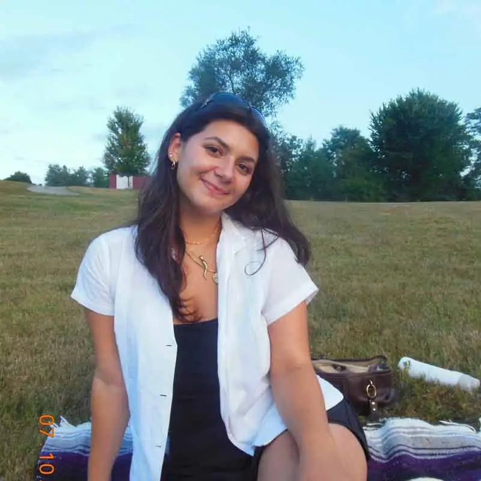
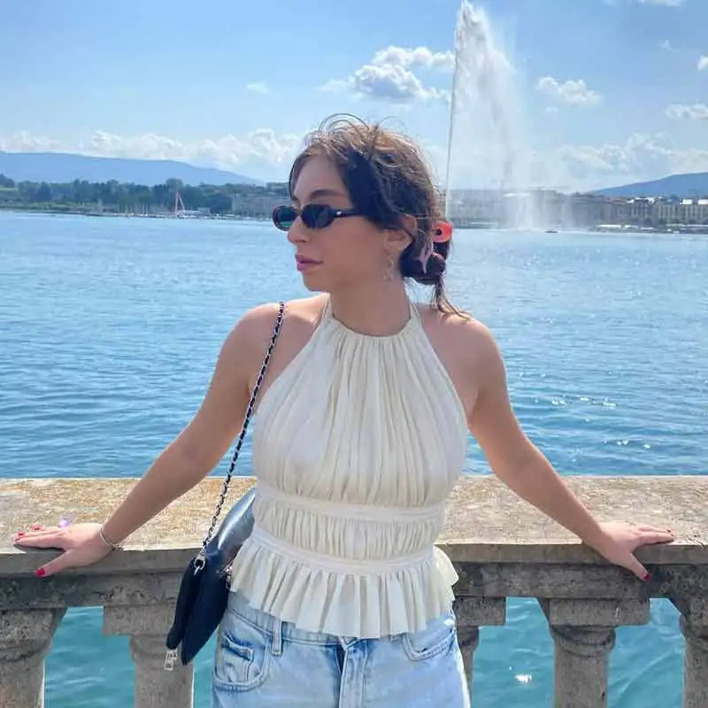

More about Patchwork.
Read about our mission and meet our team.
Patchwork emerged from a shared desire to celebrate the literary talents and artistic expressions of undergrads. We recognized a need for a medium that could amplify both new and established student writers and artists. Our vision is to stitch these together into a patchwork tapestry of student voices. We are a magazine for undergrads, by undergrads.

Lola Hart
Editor in Chief

Ingrid Burger
Head UX & Graphic Designer

Sam Mattei
Managing Editor

Sophie Hodler
Head of Fundraising

Danny Bowen
Head of Social Media